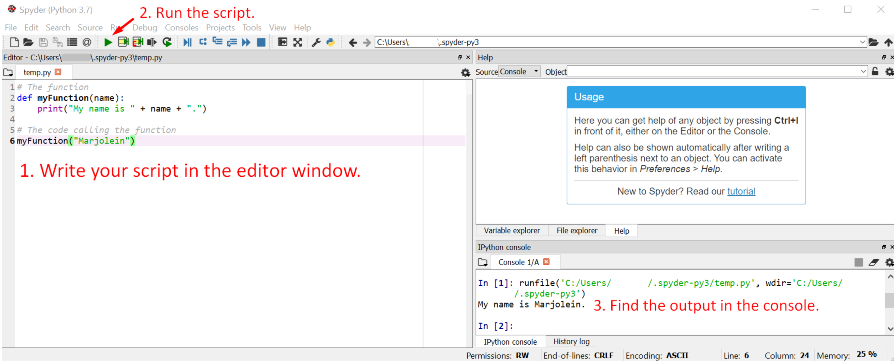

Scripting¶
In this tutorial¶
This tutorial introduces you to the concept of scripting. Although scripting can often be done within software packages such as Revit or QGIS, we will focus here on standalone scripts. However, these basic principles apply to scripting in any environment. We will use Spyder to write and run some simple examples.
1. What is a Script?¶
If you quit Spyder (or another editor/IDE) and enter it again, the variables or functions that you defined in the console will be lost. However, you may want to store a particular sequence of commands for several reasons.
You want to share the sequence with someone.
You want to reuse the sequence later on.
You want to automate a process.
Fortunately, we can use scripting to store the sequence of commands for later use. In this way we can easily run the code again in one go.
To illustrate, imagine you used a set of commands to clean a dataset with sensor data. Now that you finished cleaning the data from one sensor, you need to move on to other sensors. Since the data will likely show similar errors, cleaning both datasets will require similar procedures. Therefore it is usefull to store the steps that you took for the first dataset, so you can apply them again. This can safe you a lot of time! Alternatively, you might want to help a peer student out to clean his dataset. You could simply send the script you developed to this person and he/she will also be able to repeat your procedures.
1.1 Scripts versus Modules¶
So, what is the difference between scripts and modules? As we discussed here, modules provide sets of functions that we can use in our scripts. We do not “run” modules, but we use pieces of them in our scripts.
A script, on the other hand, consists of lines of code which will run sequentially. It may contain definitions of function, like in modules, but these functions are called within the script.
Hence, modules are created to be imported, whereas scripts are developed to be executed.
Exercise 1: What is a script?¶
Can you think of a simple script that you could write for a project you have been working on?
What are the steps that the script would need to perform?
Would the script take any input?
What would be the output?
2. Defining and Calling Functions in Scripts¶
This tutorial discussed the basics of using and defining functions. Recall that, to define a function, you will need to use the def keyword, followed by the name of the function, parenthesis and a colon. Next, you must indent one level to start writing your function. The example below was used in one of the exercises.
def myFunction(name):
print("My name is " + name + ".")
If you want to call this function from the console, you would have to run myFunction(name) and insert a name (string) as argument. Now, if we want to run this function in our script, we can simply add this to our document.
However, be aware of the following! If you call a function in a script, make sure that the definition of the function is located BEFORE the piece of code which calls it. This is important because otherwise Python will “not know about” the function yet. It will spit you an error saying the function has not yet been defined.
# The function
def myFunction(name):
print("My name is " + name + ".")
# The code calling the function
myFunction("Marjolein")

Exercise 2: Functions in Scripts¶
Write two simple functions
function1()&function2(), each of which take at least one argument. Add both of them to a .py file.Specify variables which store potential values for each argument.
Within the script, call both functions using the variables you just specified.
Where did you locate 1) the definitions of the functions, 2) the specifications of the variable and 3) the code to call the functions? Why did you use this particular order in your script?
Run the script and check if the results are as expected.
Ofcourse, the example above is very minimalistic. However, scripts can cover large processes. For example, you could write a script that includes data collection, cleaning and analyses. This is particularly useful if you want to repeat this whole process serveral times.
Often, these scripts will contain multiple functions which are called in a particular sequence. If multiple functions use to the same variable, it is important to ensure that this variable is defined globally or passed along as argument. To understand why this is necessary, you should be aware of the difference between local and global variables.
2.1 Local Variables¶
Local variables are defined wihtin a function. As such, they can only be accessed within the function itself.
If you look at the example below, you will see that borth functions that are defined print the variable localvar. However, in both cases, this variable has a different value. This is possible because localvar is a local variable that is only defined within the boundaries of the function.
# First function
def function1():
localvar = "local variable 1"
print (localvar)
# Second function
def function2():
localvar = "local variable 2"
print (localvar)
2.2 Global Variables¶
Global variables are defined outside the functions of a script. As such, they are accessible across the script. That is, we can use these variables in any of our functions. However, we should specify when we are using a global variable using the global keyword followed by the name of the variable. Otherwise, Python will assume that you are using a local variable.
globalvar = "global variable"
# First function
def function1():
global globalvar # Indicates we want to use the global variable.
print ("This is function1, printing: " + globalvar)
# Second function
def function2():
global globalvar
print ("This is function2, printing: " + globalvar)
# Wrong!
def function3():
print ("This is function3, printing: " + globalvar)
Exercise 3: Local and Global Variables¶
Consider the example code for the local variables. Can you print the value of
localvarwithout running one of the functions? Why (not)?Try running
function3of the example code for global variables. Why do you get an error? Try to fix the problem.
Exercise 4: Defining a Function and Writing a Script¶
# Importing the package.
Import GetOldTweets3 as got
# Defining the search criteria.
tweetCriteria = got.manager.TweetCriteria().setQuerySearch('Eindhoven').setSince("2019-05-01").setUntil("2019-09-30").setMaxTweets(1)
# Collecting one tweet based on the search criteria and store it to the variable "tweet".
tweet = got.manager.TweetManager.getTweets(tweetCriteria)[0]
# Print the text of the collected tweet.
print(tweet.text)
In the code above, we use a specific set of search criteria to find one tweet about “Eindhoven” posted between 2019-05-01 and 2019-09-30. Instead, we would now like to develop a function that we can call to do this for any set of search criteria.
What should be the arguments for this function? What are their datatypes?
What will be the output of this function?
Try to develop the function.
Call the function twice from within the script, using different search criteria. Run the script to check the results. (Note: If you change the maximum amount of tweets, you will have to adapt the way you print their content. Hint: Use a loop.)
Store the two sets of search criteria in a list (you can extent this list with more sets if you want). Write a loop to call the function for all sets in the list.
Advanced: Try to extent the script you wrote by following the steps below:
Adapt the function you have created so that each of the tweets that is collected is added to a list. (Note that this list should be globally accessible!)
Add another function which iterates over the list and prints the hashtags of all tweets.
Next, add another function which prints a sentence stating how many tweets were collected in total.
Within the script, call the function for collecting the tweets twice, with different sets of search criteria. Call the other functions afterwards.
Run the script.